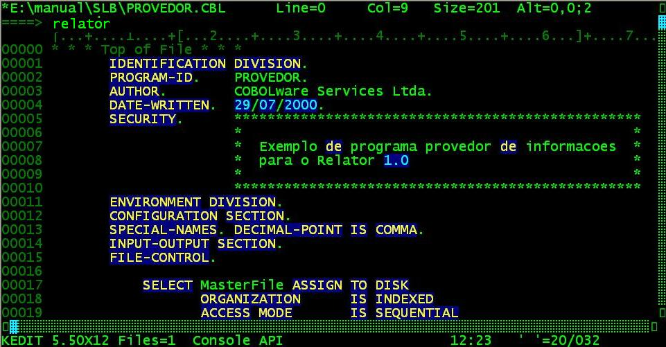
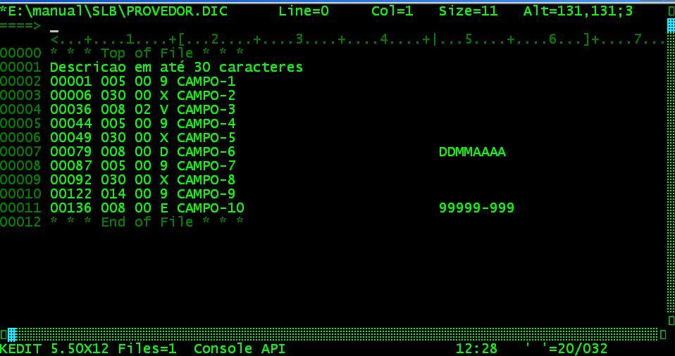

Gerador de relatórios
O Relator visa simplificar e agilizar a criação de relatórios customizados, reduzindo a quantidade de programas dos sistemas e os custos de mão-de-obra de programação.
Para tornar viável a
distribuição "embutida" de um gerador de
relatórios em sistemas de software houses para seus clientes,
a meta foi obter baixos preços de licenciamento e alta
performance, para isso precisavam ser reduzidos os custos de
desenvolvimento e eliminada dependência de softwares de
terceiros, assim, o Relator incorpora um conceito inovador de
obtenção das informações no momento da
emissão dos relatórios, o provedor
de dados.
Diferente das soluções até
então disponíveis, o Relator não recorre a ODBC
ou a dicionários de dados que reconheçam o formato
proprietário da Micro Focus, para obter os dados, o caminho
adotado foi repassar a tarefa de leitura a programas reentrantes
escritos pelo próprio desenvolvedor do sistema que se
encarregam de fazer a leitura de um registro a cada chamada.
O
conceito de provedor de dados se vale do
fato de que praticamente todos os relatórios se baseiam na
leitura de um arquivo mestre e de um ou mais arquivos de apoio,
criando uma linha de detalhe montada em função de uma
visão relacional.
Desta forma, um gerador de relatórios
pode tratar uma visão relacional como se fosse apenas um
arquivo (o mestre) e as demais colunas se repetem enquanto mantém
o mesmo relacionamento.
Exemplo: Lista de profissionais.
|
CODIGO |
NOME |
PROFISSAO |
CARGO |
|
001 |
DOM PEDRO I |
01 IMPERADOR |
20 GOVERNANTE |
|
002 |
DOM PEDRO II |
01 IMPERADOR |
10 PRINCIPE |
|
003 |
JULIO CESAR |
01 IMPERADOR |
30 APOSENTADO |
|
004 |
PEDRO ALVARES CABRAL |
02 NAVEGADOR |
40 CAPITAO |
|
005 |
VASCO DA GAMA |
02 NAVEGADOR |
44 COMANDANTE |
|
006 |
CRISTOVAO COLOMBO |
02 NAVEGADOR |
80 ALMIRANTE |
Neste caso, o cadastro de profissionais é o MasterFile enquanto que a tabela de profissões é o AddFile1 e a tabela de cargos o AddFile2. Assim, o gerador pode utilizar uma lógica padrão para a ordenação, seleção, impressão e quebra/totalização tratando como simulando um único arquivo montado pelo Provedor, tal situação se repete em uma vasta gama de relatórios, mudando apenas a quantidade de arquivos secundários, vários provedor podem ser disponibilizados em função dos diversos arquivos de um sistema, um arquivo pode ser considerado mestre por um provedor e de apoio por outro.
Desta forma, a arquitetura do dicionário se torna bem
simples, já que é necessário definir somente as
posições e os atributos das colunas (ou campos) que
serão repassadas pelo provedor via LINKAGE
SECTION.
São 3 módulos escritos em Micro
Focus COBOL que devem ser cadastrados na tabela
de programas do gerenciador.
CWREL1:
Editor, cria e mantém as definições dos
relatórios (Arquivo
FORMATOS/FORMATOS.idx),
utilizado apenas por desenvolvedores ou por usuários
autorizados e treinados em definir relatórios.
CWREL2:
Gerador, interpreta as definições, tratando da seleção,
ordenação, formatação, impressão e
totalização.
CWREL3:
Carrega os dicionários. Uma vez escrito o programa provedor,
as definições da LINKAGE
SECTION precisam ser carregadas no dicionário (Arquivo
COLUNAS/COLUNAS.idx),
para que estejam disponíveis para os módulos CWREL1
e CWREL2 que
assim podem "entender" o que está sendo passado como
parâmetro.
Todos os campos devem ter USAGE DISPLAY. A macro RELATOR.KEX (Linguagem de programação de macros do Kedit) transforma o programa provedor em uma tabela texto Nome-do-Provedor.DIC que será solicitado pelo CWREL3.
|
Editando o provedor de exemplo com o kedit e executado o comando relator |
|
 |
|
Resultado obtido |
|
 |
Na impossibilidade de se utilizar o Kedit, será necessário definir o arquivo de carga do dicionário (formato texto) manualmente seguindo o Layout.
|
Exemplo
de dicionário |
Utilizando o indicador
de comentário *> do COBOL, as
colunas Tipo e Máscara podem ser declaradas na própia
LINKAGE SECTION, vide exemplo no
provedor.
Os Itens numéricos
que possam dar origem a totalizações (Acumuladores,
vide CAMPO-3[+]), devem ser
sinalizados com "V", gerar
acumuladores para valores oriundos de arquivos de apoio (AddFiles)
pode não fazer sentido já que darão origem a
colunas sujeitas a repetição.
Itens de data
devem ser indicados com "D" e
a máscara precisa ser definida orientando o gerador nas
comparações e classificações cronológicas
(vide CAMPO-6). Se o ano tiver
apenas dois dígitos "AA",
a princípio, o "janelamento" será feito em
função do valor 28 (1929
a 2028) mas este valor pode ser alterado
na configuração do
gerenciador.
A macro DATA.KEX
pode ser usada logo após a RELATOR.KEX
para identificar as datas automaticamente caso os nomes dos campos
sejam intuitivos.
A marcação "C"
indica que o item deve ser tratado e editado como um CPNJ(CGC) ou
CIC(CPF).
Máscaras podem ser definidas para qualquer
item numérico que exija edição fora do padrão
convencional (de 3 em 3 casas para inteiros mais vírgula
decimal) (como por exemplo o CAMPO-10
que deve ser editado como um CEP "99999-999".
Caso
a posição inicial do campo não seja numérica,
o importador trata os primeiros 30 caracteres como comentário
para descrição do provedor.
Convém disponibilizar um arquivo texto com o mesmo nome do provedor com a extensão HLP contendo explicações sobre os campos existentes no dicionário, este arquivo será exibido ao se pressionar F1 no momento da seleção de colunas durante a definição de relatórios.